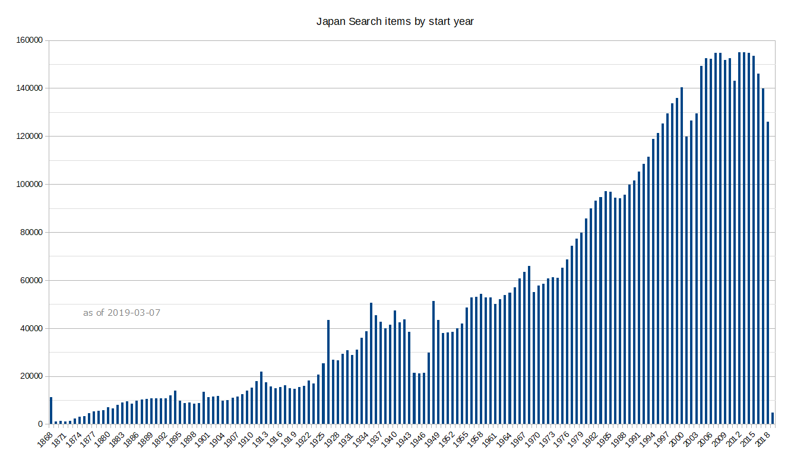

This tool searchs a keyword in UTokyo Academic Archives Portal items, and count the occurrences by year. If items have year range, those occurrences are divided by the number of years in the range. Click a point in the graph, then a link to keyword query for the year will be shown. Some interesting words would be 大相撲 (Sumo) or パソコン (Personal computer). Although only single keyword allowd, multiple charts can be combined later (as long as the same year range).
キーワードマッチはVirtuosoのbif:containsを用いており、検索漏れがある可能性もあります。逆に「京都」で検索すると「東京都」もヒットします。また「タイトル以外も含む」にするとローマ字読みも対象になるので、「AI」では大半が「愛」になります。Keyword match uses bif:contains which might not be optimized for Japanese search.
東京大学学術資産等アーカイブズポータル全体で、年情報（schema:temporal）による年別アイテム数は、下図のようになっています。マッチ数の評価は、この全体数も念頭に置いてください（マッチ数そのものでもいろいろ面白い傾向はつかめると思いますが）。The entire UTokyo Academic Archives Portal items numbers by year (schema:temporal) are shown below. When evaluate the number of hits, consider that general numbers are increasing in years.
ジャパンサーチのデータセットの偏りによる影響も考えられます。現在のところ、図書（全国書誌）やNDLデジタルアーカイブに含まれるキーワードが大きな割合を占めることになります。また年情報を持つものに限られるので、総数の大きな標本類が含まれないことにも注意してください。Some specific types of items (e.g. Books or NDL Digital Archives) account for large portion of Japan Search, which could also cause some skew in the resulting hits.
{kind=link}